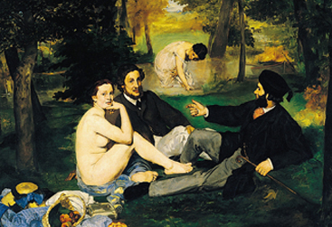

识。马奈草地
秉承对艺术生活的向往和追求，北京首家以艺术为主题的会员邀请制俱乐部“马奈草地国际俱乐部”于因缘际会，至此肇始。
马奈草地国际俱乐部隐于西山人文清贵之地，离尘不离城。地脉延于“皇家园林”玉泉山、颐和园，毗邻国家金融中心、国家行政中心、中关村高科技园区、清华北大等知名高校人杰地灵，悠然于世。
俱乐部私享8万平米园林绿地，静谧舒展，是京城最具规模的艺术主题俱乐部。俱乐部的案名源起于法国印象派大师爱得华•马奈的经典之作《草地上的午餐》，2.1万平方米的学院派风格建筑内马奈草地美术馆、音乐厅及穹顶图书馆三大艺术空间唯俱乐部所独有。与此同时这里还集聚了艺术氛围浓厚的的主题沙龙中餐厅、西餐厅、宴会及会议厅、庭院客房、健身休闲中心、莲Spa、儿童活动中心等完备设施，贴心周到的个性化私属服务，满足会员的全方位需求。让会员感受如家般的温馨。
